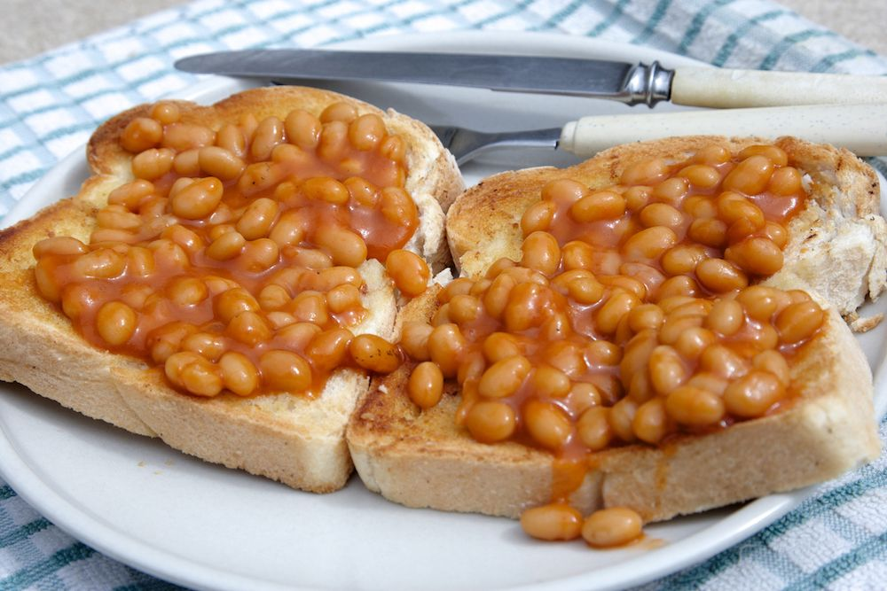

Beans on Toast

Description
Sometimes a breakfast is worth taking some time over. Other mornings, you just need something quick and delicious. This recipe can be either depending on the occasion.
We all know a bean-snob, but the key to this one is getting the heat just right, so those little orange wonders pick up all the subtleties of your mood.
Ingredients
- Tin of beans (don't be a snob!)
- Two thick slabs of bread
- Enough butter to paint a wall
Steps
- Take a silent, unhurried moment before you open your beans. Sometimes I feel like I'm praying.
I don't worry about the words you use, I just try connecting to whatever's out there using my current emotions. Don't feel you can only prepare like this in a good mood:
beans can withstand the foulest of tempers. In fact, on the mornings I feel my most pissed-off, this recipe seems to reciprocate with an extraordinary, calming energy.
- Don't worry if you don't feel a connection (or receive an “answer” if you're praying) - the act of stopping and waiting, even for a short while, is enough.
- Cook your beans, toast your bread and butter it like this is the last meal you'll ever eat.
- Pause regularly while eating to be mindful and grateful. Don't let those bloody bean-snobs get you down.